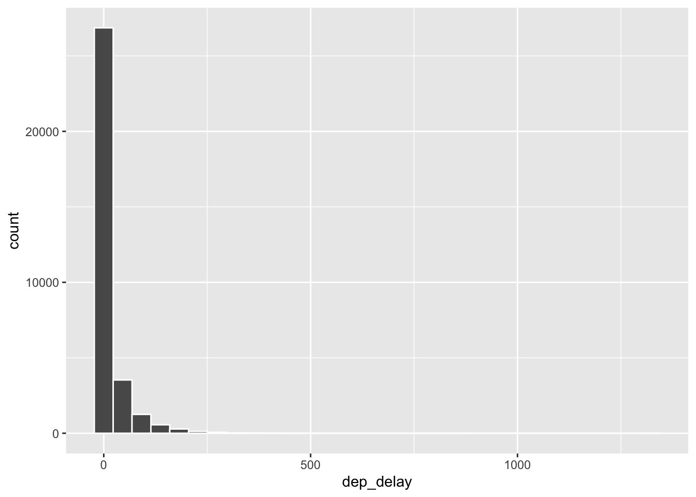
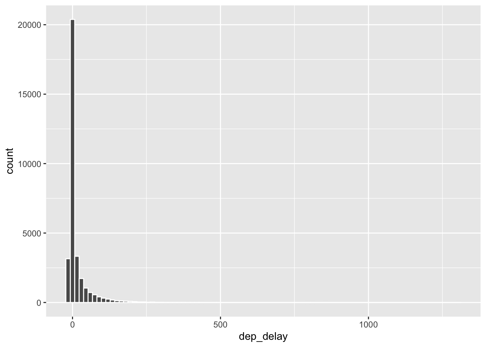
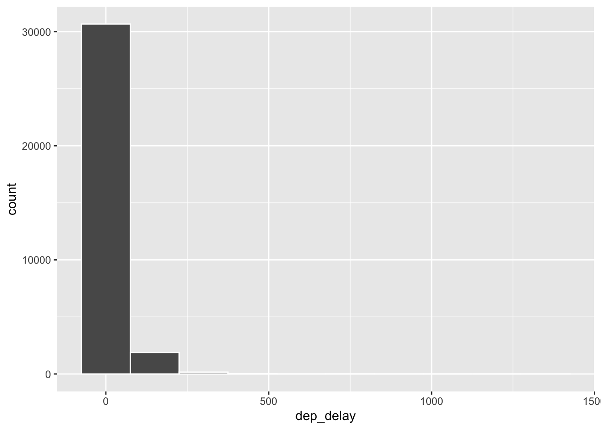
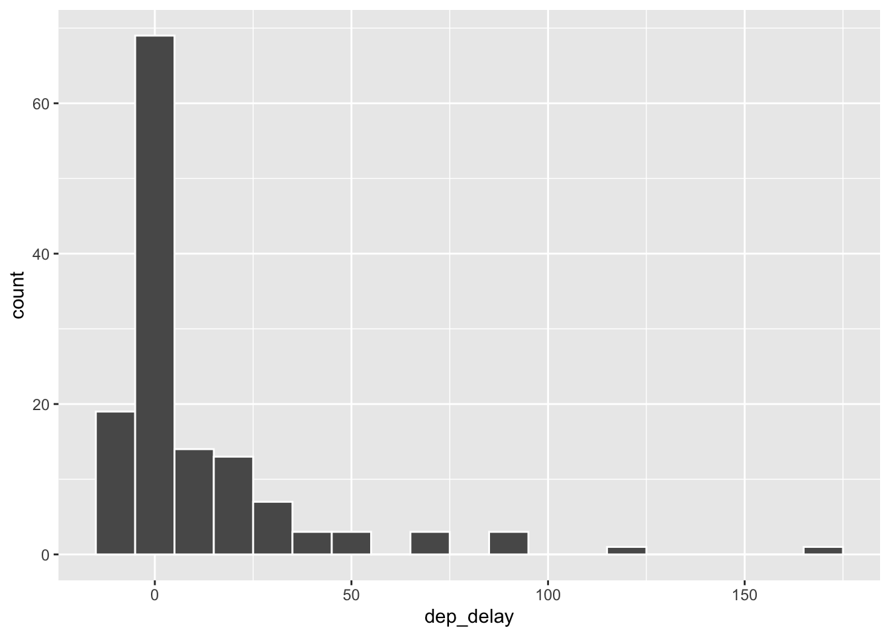
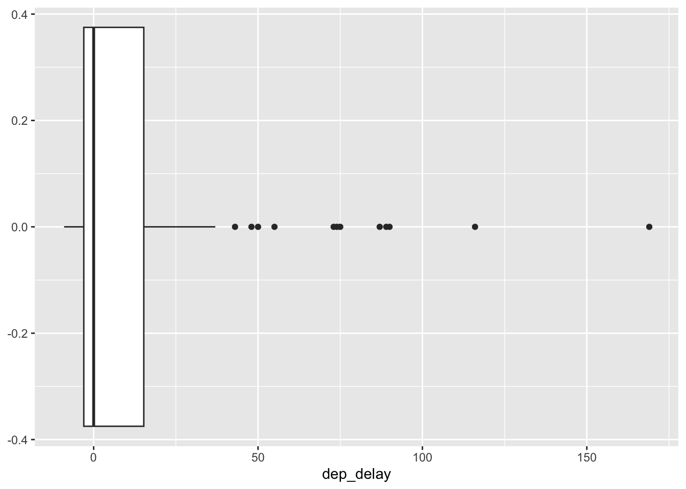

library(tidyverse)
library(openintro)AE-04: NYC Flights
Application exercise
In this activity we explore a random sample of domestic flights that departed from the three major New York City airports in 2013. We will generate simple graphical and numerical summaries of data on these flights and explore delay times. Since this is a large data set, we’ll also use some techniques for filtering and grouping our data.
Goals
- Visualize and summarize numerical data
- Learn techniques for filtering and grouping data
Packages and Data
As with all of our activities, we’ll need the tidyverse package for various useful R commands. The dataset we need is found in the companion package for our textbook, openintro.
The data
The Bureau of Transportation Statistics (BTS) is a statistical agency that is a part of the Research and Innovative Technology Administration (RITA). As its name implies, BTS collects and makes transportation data available, such as the flights data we will be working with in this activity
First, let’s view the data frame to get a sense of what the variables are.
glimpse(nycflights)Rows: 32,735
Columns: 16
$ year <int> 2013, 2013, 2013, 2013, 2013, 2013, 2013, 2013, 2013, 2013, …
$ month <int> 6, 5, 12, 5, 7, 1, 12, 8, 9, 4, 6, 11, 4, 3, 10, 1, 2, 8, 10…
$ day <int> 30, 7, 8, 14, 21, 1, 9, 13, 26, 30, 17, 22, 26, 25, 21, 23, …
$ dep_time <int> 940, 1657, 859, 1841, 1102, 1817, 1259, 1920, 725, 1323, 940…
$ dep_delay <dbl> 15, -3, -1, -4, -3, -3, 14, 85, -10, 62, 5, 5, -2, 115, -4, …
$ arr_time <int> 1216, 2104, 1238, 2122, 1230, 2008, 1617, 2032, 1027, 1549, …
$ arr_delay <dbl> -4, 10, 11, -34, -8, 3, 22, 71, -8, 60, -4, -2, 22, 91, -6, …
$ carrier <chr> "VX", "DL", "DL", "DL", "9E", "AA", "WN", "B6", "AA", "EV", …
$ tailnum <chr> "N626VA", "N3760C", "N712TW", "N914DL", "N823AY", "N3AXAA", …
$ flight <int> 407, 329, 422, 2391, 3652, 353, 1428, 1407, 2279, 4162, 20, …
$ origin <chr> "JFK", "JFK", "JFK", "JFK", "LGA", "LGA", "EWR", "JFK", "LGA…
$ dest <chr> "LAX", "SJU", "LAX", "TPA", "ORF", "ORD", "HOU", "IAD", "MIA…
$ air_time <dbl> 313, 216, 376, 135, 50, 138, 240, 48, 148, 110, 50, 161, 87,…
$ distance <dbl> 2475, 1598, 2475, 1005, 296, 733, 1411, 228, 1096, 820, 264,…
$ hour <dbl> 9, 16, 8, 18, 11, 18, 12, 19, 7, 13, 9, 13, 8, 20, 12, 20, 6…
$ minute <dbl> 40, 57, 59, 41, 2, 17, 59, 20, 25, 23, 40, 20, 9, 54, 17, 24…Note – to view just the names of the variables, we can also use the names command. Try it!
Tip
To get more information about these variables, we can consult the codebook – documentation that gives a description of the variables. You can do this by typing ??nycflights in the console window (lower left). Alternatively, find the packages tab in the lower right of your posit.cloud window. Click on it and then click on openintro. Then click on nycflights.
One of the variables is carrier (i.e. airline) of the flight, which is coded according to the following system.
carrier: Two letter carrier abbreviation.9E: Endeavor Air Inc.AA: American Airlines Inc.AS: Alaska Airlines Inc.B6: JetBlue AirwaysDL: Delta Air Lines Inc.EV: ExpressJet Airlines Inc.F9: Frontier Airlines Inc.FL: AirTran Airways CorporationHA: Hawaiian Airlines Inc.MQ: Envoy AirOO: SkyWest Airlines Inc.UA: United Air Lines Inc.US: US Airways Inc.VX: Virgin AmericaWN: Southwest Airlines Co.YV: Mesa Airlines Inc.
Departure Delays
Let’s start by examining the distribution of departure delays of all flights with a histogram using the variable dep_delay
ggplot(data = nycflights, aes(x = dep_delay)) +
geom_histogram(col="white")`stat_bin()` using `bins = 30`. Pick better value with `binwidth`.
Histograms are generally a very good way to see the shape of a single distribution of numerical data, but that shape can change depending on how the data is split between the different bins. You can easily define the binwidth you want to use:
ggplot(data = nycflights, aes(x = dep_delay)) +
geom_histogram(binwidth = 15, col="white")
ggplot(data = nycflights, aes(x = dep_delay)) +
geom_histogram(binwidth = 150, col="white")
Filtering
Suppose we’re only interested in flights headed to Portland, OR. We can filter the data for flights with that destination (dest == "PDX") and then make a histogram of the departure delays of only those flights.
pdx_flights <- nycflights |>
filter(dest == "PDX")
ggplot(data = pdx_flights, aes(x = dep_delay)) +
geom_histogram(binwidth = 10, col="white")
Let’s decipher these two commands (OK, so it might look like four lines, but the first two physical lines of code are actually part of the same command. It’s common to add a break to a new line after |> to help readability).
Command 1: Take the
nycflightsdata frame,filterfor flights headed to PDX, and save the result as a new data frame calledpdx_flights. By creating a new data frame, we can use it for further analysis later on.==means “if it’s equal to”.PDXis in quotation marks since it is a character string.
Command 2: Basically the same
ggplotcall from earlier for making a histogram, except that it uses the smaller data frame for flights headed to PDX instead of all flights.
Tip
Filtering for certain observations (e.g. flights from a particular airport) is often of interest in data frames where we might want to examine observations with certain characteristics separately from the rest of the data. To do so, you can use the filter function and a series of logical operators. The most commonly used logical operators for data analysis are as follows:
==means “equal to”!=means “not equal to”>or<means “greater than” or “less than”>=or<=means “greater than or equal to” or “less than or equal to”
Numerical Summaries
Now let’s look at some numerical summaries for these flights:
pdx_flights |>
summarise(mean_dd = mean(dep_delay),
median_dd = median(dep_delay),
n = n())# A tibble: 1 × 3
mean_dd median_dd n
<dbl> <dbl> <int>
1 10.8 0 136Note that with the summarise function we created a list of three different numerical summaries that we’re interested in. The names of these elements are user defined, like mean_dd, median_dd, n, and you can customize these names as you like (just don’t use spaces in your names). Calculating these summary statistics also requires that you know the function calls. Note that n() reports the sample size.
Tip
Summary statistics: Some useful function calls for summary statistics for a single numerical variable are as follows:
meanmediansdvarIQRminmax
Note that each of these functions takes a single vector as an argument and returns a single value.
We can also filter based on multiple criteria. Suppose we’re interested in flights headed to Portland (PDX) in July:
pdx_jul_flights <- nycflights |>
filter(dest == "PDX", month == 7)Note that we can separate the conditions using commas if we want flights that are both headed to PDX and in July If we are interested in either flights headed to PDX or in July, we can use the | instead of the comma.
# add code here# add code hereSummary statistics for groups
Another useful technique is to calculate summary statistics for various groups in your data frame. For example, we can modify the above command using the group_by function to get the same summary stats for each origin airport:
nycflights |>
group_by(origin) |>
summarise(median_dd = median(dep_delay), mean_dd = mean(dep_delay), iqr_dd = IQR(dep_delay), n_flights = n())# A tibble: 3 × 5
origin median_dd mean_dd iqr_dd n_flights
<chr> <dbl> <dbl> <dbl> <int>
1 EWR -1 15.3 19 11771
2 JFK -1 12.3 15 10897
3 LGA -3 10.1 13 10067This shows us that LaGuardia Airport (LGA) has the smallest average departure delay.
# add code hereDeparture delays by carrier
Suppose you really dislike departure delays and so you want to choose an airline that minimizes your potential departure delay leaving NYC.
# add code hereBoxplots
Finally, let’s look at some boxplots. As we know, boxplots give us a different way to visualize a distribution. Here, we are looking at the arrival delay arr_delay.
nycflights |>
filter(dest == "PDX") |>
ggplot(aes(dep_delay)) +
geom_boxplot()